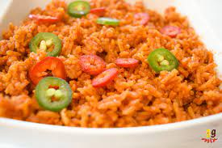

jollof_rice

jollof rice with vegetables
Ghanaian's most delicious delicacy
ingredients
- 100 ml vegetable oil
- white onions (roughly chopped)
- 500 g passata
- 3 chicken stock cubes
- Salt (to your preference)
- 3 cups white jasmine rice (rinsed)
- 3 1/2 cups of water
- 2 tsp curry powder
steps
- Add your 2 chopped onions and 20ml of your vegetable oil to your blender and blitz until your onions are a smooth puree
- Heat the rest of your oil (80ml) in your pan and add your onion puree. Stir it a little then leave it on the lowest heat to turn golden. It will take about 5 minutes but keep an eye on it so it doesn't burn
- Whilst your onions are caramelising add the rest of your ingredients to your blender (you don't need to rinse it) and blitz until you have a smooth sauce
- When your onions have turned a nice golden brown (see the video below) give them a stir then add your tomato sauce. Give everything a good mix then leave it to simmer on the lowest heat for 20 minutes. Make sure to stir your sauce every 5 minutes when the oil rises to the top. This is to stop your sauce sticking to the bottom of your pan
- Add your 2 1/2 cups of rinsed basmati rice to your stew and stir it in well so all your rice grains are covered
- Add in 2 1/2 cups of water and stir everything well. Then cover your pan with some foil and then the pan lid and leave it to simmer on a low heat for 30 minutes
- When your rice is cooked fluff it up with a fork
- Now it's time to enjoy, so dig in (",)